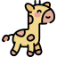

La jirafita Fita 
Fita se siente orgullosa de haber nacido jirafa. Acaba de cumplir doce meses y ya es mucho más alta que su mejor amiga, una simpática liebre llamada Orejotas. A Fita le encanta pensar que dentro de poco tiempo, cuando llegue a la edad adulta, su cuerpo larguirucho le permitirá oler las nubes y contemplar cosas maravillosas que los demás animales jamás verán.
La jirafita Fita adora comer hierba fresca, pero de vez en cuando levanta el cuello y mordisquea los jugosos frutos que se esconden en las copas de los árboles ¡Ser el animal más alto del planeta tiene muchas ventajas! Si no encuentra ninguno no se preocupa ¡Se da un buen banquete a base de tiernas hojas de acacia y asunto arreglado!
Como el resto de jirafas, Fita es tranquila y sociable. Todos los días, cuando sale a pasear por la llanura, las gacelas la rodean para admirar su hermoso pelaje. Lejos de enfadarse, Fita agradece la curiosidad que despierta su abrigo de terciopelo marrón con manchitas oscuras, y les dedica la mejor de sus sonrisas.
¡Poné a prueba tu comprensión lectora con el siguiente juego!